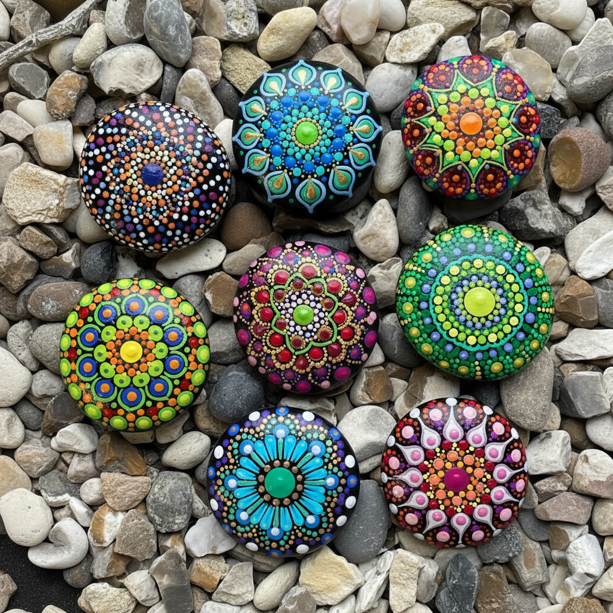
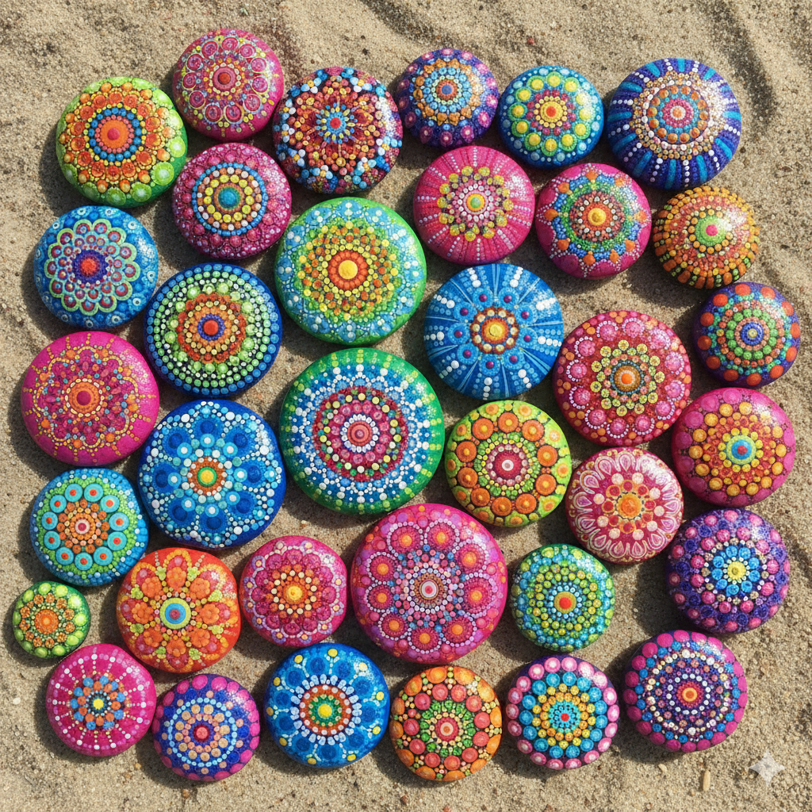

Mandala Dot-Painting Workshop Petteflet
Welcome to Mandala Dot-Painting! 🎨

What is a Mandala?
A mandala is a special kind of circular art that looks like a beautiful, colorful flower or snowflake! The word “mandala” comes from an ancient language called Sanskrit, and it means “circle”. Mandalas are like magical circles filled with patterns that go round and round from the center — kind of like ripples in a pond when you drop a pebble in the water!

Where Do Mandalas Come From?
Mandalas have been around for thousands of years! They started in faraway places like India and Tibet, where people created them as a special way to think peaceful thoughts and feel calm. Monks and artists would spend days or even weeks making incredibly detailed mandalas using colored sand, paint, or precious stones.
People in many different countries make mandalas – from Asia to Native American cultures. Each culture has its own special style and meaning!

Different Types of Mandalas
There are so many kinds of mandalas! Some are:
Sand Mandalas
Made with colored sand (like a sand castle, but way fancier!)


Painted Mandalas
Created with brushes and paint.

Stone Mandalas
Arranged with rocks and pebbles.

Dot-Painted Mandalas
Made with lots and lots of colorful dots (this is what we’ll do today!).

Animated Mandalas
Nature mandalas


Today’s Adventure: Dot-Painting!
Today, we’re going to create our very own mandalas using the dot-painting technique! This means we’ll use special tools to make tiny, colorful dots that form beautiful patterns. It’s like connecting the dots, but YOU get to put the dots wherever you want to make your own unique design!
Ready to become mandala artists? Let’s get started! 🌟

License
This project is licensed under the terms of the Creative Commons Attribution-NonCommercial 4.0 International Public License (CC-BY-NC 4.0).
For the full license terms, see the LICENSE file.
Author
Copyright (c) 2025, Artur Barseghyan <artur.barseghyan@gmail.com>. All Rights Reserved.